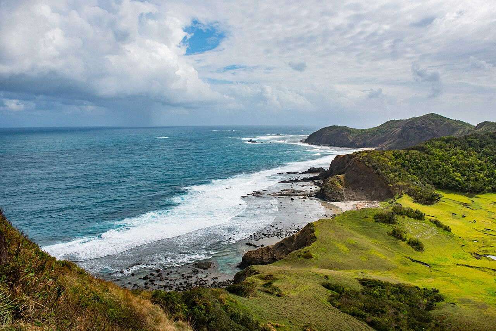
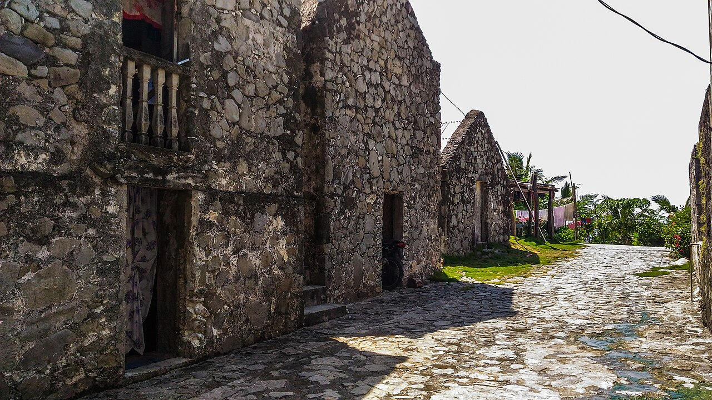

About the region
Welcome to Region II
Cagayan Valley sits in the northeastern corner of Luzon and is made up of five provinces: Batanes, Cagayan, Isabela, Nueva Vizcaya, and Quirino. Cradled between the Cordillera and Sierra Madre mountain ranges, the region is drained by the Cagayan River, the longest river in the Philippines. Its regional center is Tuguegarao City, famous for its warm hospitality and its hearty pancit batil patong.
From the windswept hills and stone houses of Batanes to the seven-chambered Callao Cave, the white-sand shores of Palaui Island, centuries-old brick churches of Isabela, and the cool waterfalls of Nueva Vizcaya and Quirino, Cagayan Valley offers adventure, history, and culture in one unforgettable journey.
Watch
A Taste of the Islands
Waves rolling onto Nakabuang Beach, Sabtang Island, Batanes
Gallery
Tourist Spots Gallery
A glimpse of the beauty waiting for you in the north





